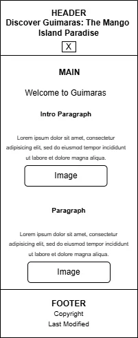
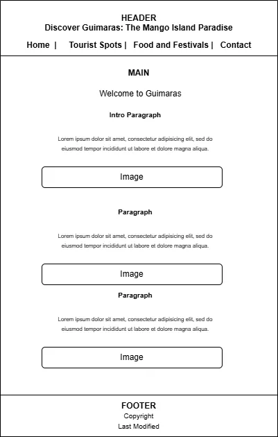

Overview
Site Name
Discover Guimaras: The Mango Island Paradise
This name was chosen because it highlights Guimaras as one of the most beautiful island provinces in the Philippines and promotes its famous mangoes, tourist attractions, beaches, festivals, and local culture.
Site Purpose
The website allows visitors to experience, learn about, and discover the beauty of Guimaras, Philippines—the home of the Manggahan Festival.
It serves as an online tourism guide providing information about tourist attractions, beaches, island destinations, mango products, festivals, local culture, and travel tips. Visitors can browse photo galleries, learn about Guimaras tourism, and contact local tourism representatives through a contact form.
Scenarios
- What are the best tourist spots and beaches to visit in Guimaras?
- When is the best time to visit Guimaras for the Manggahan Festival?
- What are the must-try local delicacies and mango products in Guimaras?
- How can I contact local tourism representatives for more information about Guimaras?
Style Guide
Color Schema
Palette URL:
https://coolors.co/ede7e7-166606-f5f922-2f2f2f| Primary | Secondary | Accent 1 | Accent 2 |
|---|---|---|---|
| #166606 | #ede7e7 | #f5f922 | #2f2f2f |
Primary Color: Mango Green (#166606) – headers, buttons, highlights.
Secondary Color: Mango Yellow (#f5f922) – cards, backgrounds, and accents.
Accent Colors: #faece1 and #f5b88f – decorative sections and hover effects.
Typography
Heading Font: Montserrat, sans-serif
Body Font: Open Sans, sans-serif
Normal Paragraph Example
Guimaras is known for its beautiful beaches, delicious mangoes, and peaceful tourist destinations.
Colored Paragraph Example
The Manggahan Festival celebrates the rich culture and world-famous mangoes of Guimaras Province.
Navigation
Wireframes
The following wireframes represent the planned layout for the website in mobile and desktop views.
Mobile View Wireframe

Desktop View Wireframe
